- 채널 사진(채널 이미지) 만들고 등록하기
- 배너 이미지 만들고 등록하기
채널 사진 만들기
현재 채널 상태 확인
유튜브 스튜디오 → 채널 맞춤설정으로 들어가면 현재 배너 이미지와 채널 사진이 비어있는 것을 볼 수 있습니다.
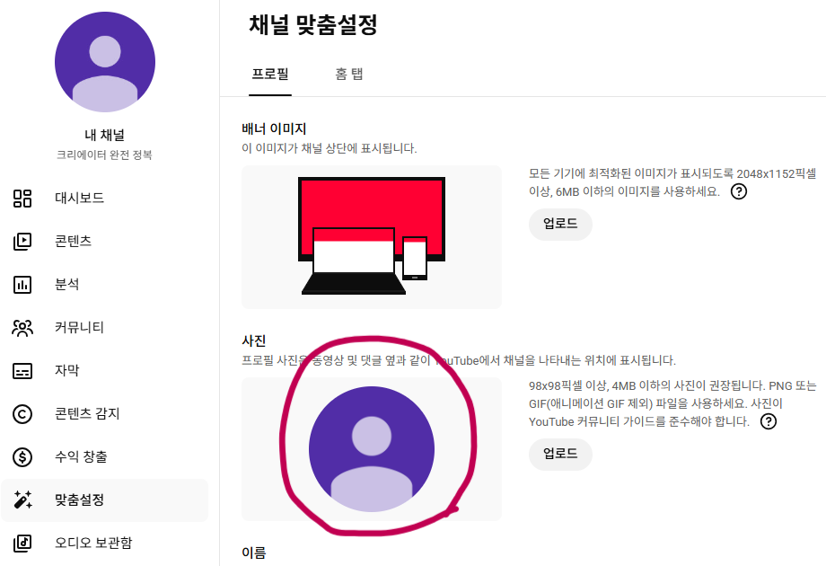
배너 이미지와 채널 사진이 어떤 것인지 아래 이미지로 확인해보세요.
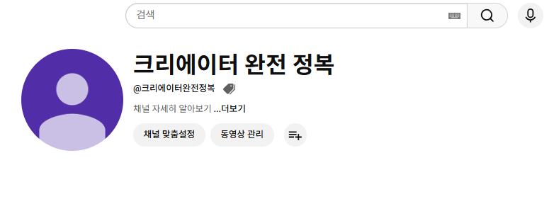
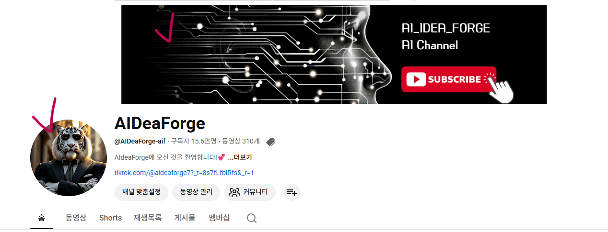
미리캔버스 접속 & 회원가입
채널 사진과 배너를 만들 때 미리캔버스를 활용합니다. 설치 없이 브라우저에서 바로 사용할 수 있는 무료 디자인 툴입니다.
🔗 미리캔버스 바로가기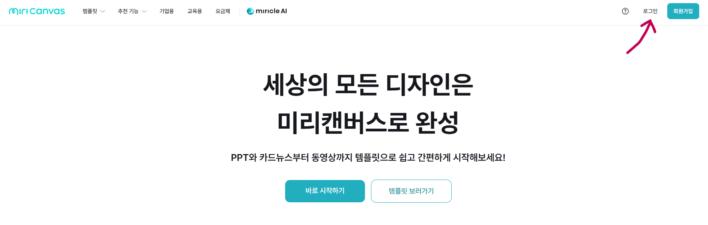
사이트에 접속하면 오른쪽 상단에 로그인 버튼이 있습니다. 클릭하면 로그인 창이 뜨며, 구글·카카오·네이버 등 원하는 방법으로 로그인합니다.
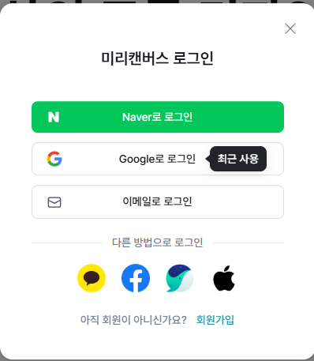
로그인 방법을 선택하면 약관 동의 창이 나타납니다. 모두 동의를 선택한 후 회원가입을 클릭합니다.
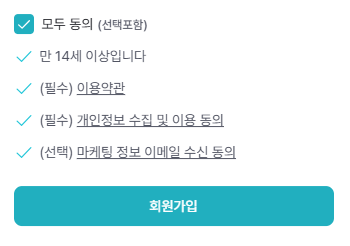
로그인이 완료되면 사용 목적을 묻는 창이 뜰 수 있습니다. 선택하지 않아도 되며, 오른쪽 상단의 X를 눌러 닫아줍니다.
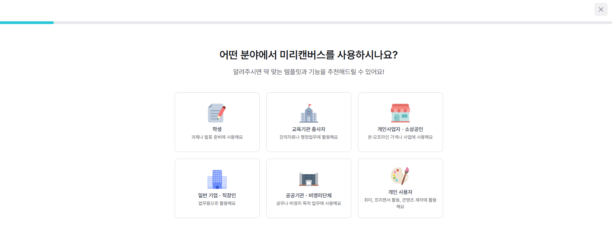
이어서 요금제 선택 창이 뜰 수 있습니다. 무료 플랜으로도 충분하므로 오른쪽 상단의 X를 눌러 바로 닫으면 됩니다.
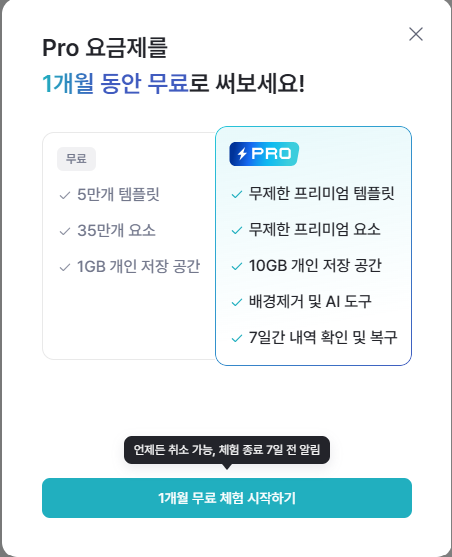
채널 로고 템플릿 선택
"무엇을 만들어야 하나요?" 창이 뜨면 채널 로고 (800×800px)를 클릭합니다.
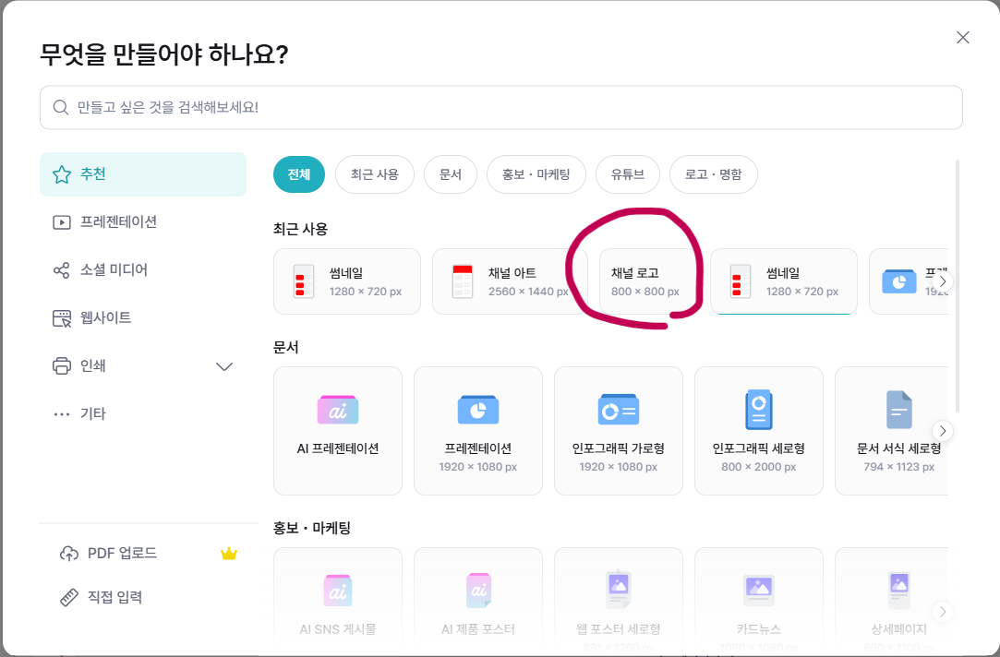
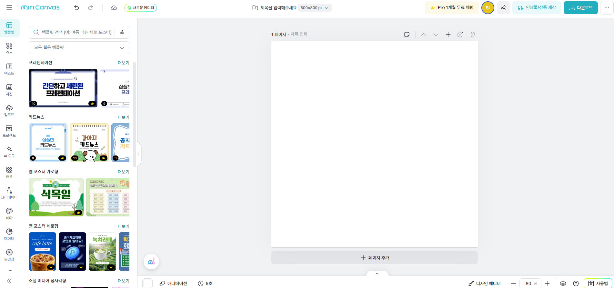
채널 로고를 클릭하면 800×800px 크기의 편집 화면이 열립니다. 왼쪽 메뉴에서 템플릿, 요소, 텍스트, 사진 등을 자유롭게 활용할 수 있으며, 가장 간단하고 깔끔한 방법은 텍스트만 사용하는 것입니다.
채널 사진과 배너는 언제든지 교체할 수 있습니다. 처음에는 심플하게 만들고 나중에 점점 업그레이드해도 됩니다.
텍스트로 채널 사진 만들기
왼쪽 메뉴에서 텍스트를 클릭하면 다양한 텍스트 스타일이 나옵니다. 원하는 스타일, 폰트, 색상으로 꾸며줍니다.
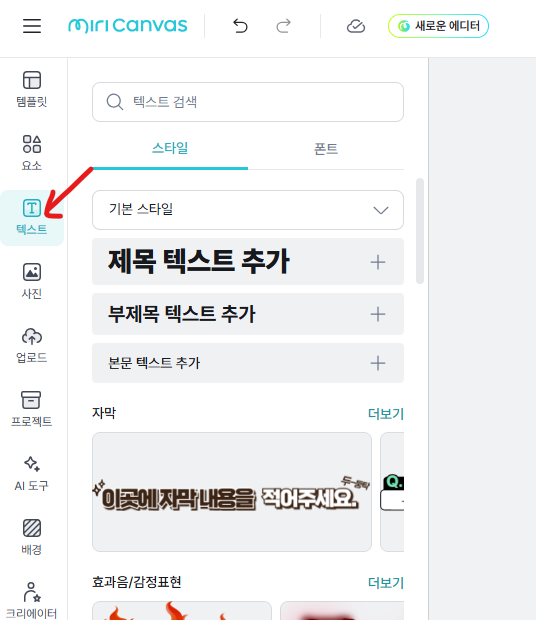
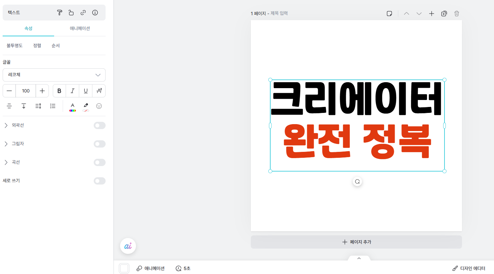
위는 텍스트만 사용해서 정 가운데에 맞게 만든 예시입니다. 형식에 구애받지 않고 원하는 대로 자유롭게 만들면 됩니다.
유튜브 채널 사진은 동그랗게 표시됩니다. 글씨나 사진을 너무 꽉 채우면 잘릴 수 있으니 가운데에 여백을 두고 만드세요.
요소를 움직이다 보면 자동으로 가운데에 맞춰지는 경우도 있습니다. 그렇지 않다면 Ctrl + ; 를 누르면 십자 선이 생깁니다. 얼추 가운데에 놓고 우클릭 → 정렬 → 가운데를 누르면 정확히 가운데로 정렬됩니다.
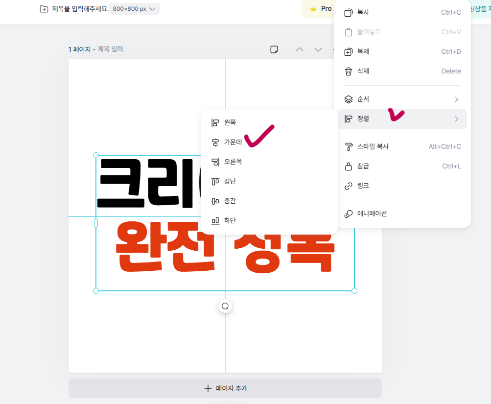
다운로드
다 만들었다면 오른쪽 상단의 다운로드 버튼을 누르고 고해상도 다운로드를 클릭합니다.
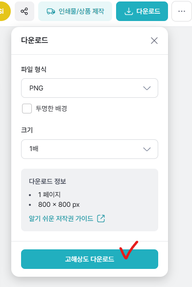
유튜브 채널 사진 업로드
다운로드가 완료되었다면 유튜브 채널 맞춤설정으로 돌아와서 사진 → 업로드를 클릭합니다. 미리캔버스에서 다운받은 이미지를 선택해서 열어줍니다.
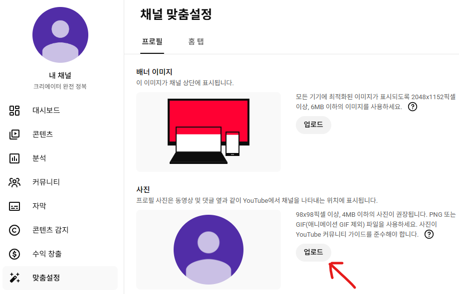
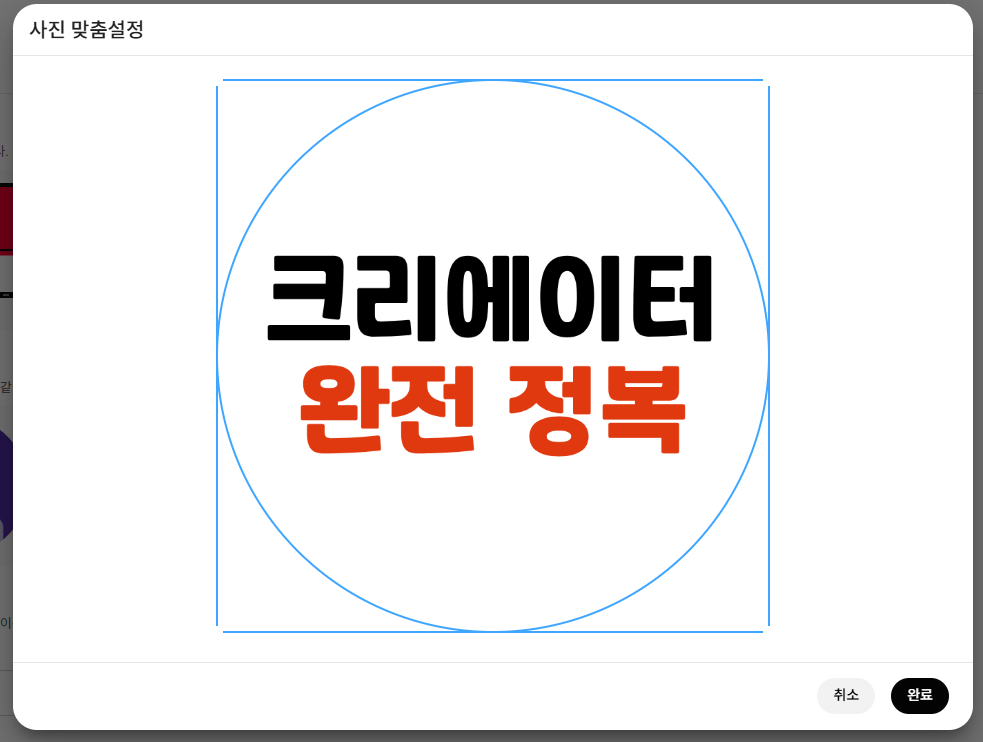
동그라미 안에 채널 이미지가 정 가운데에 들어간 것을 확인할 수 있습니다. 만약 글씨나 그림이 동그라미 밖으로 벗어났거나, 다시 만들고 싶다면 미리캔버스로 돌아가 크기를 줄이거나 처음부터 다시 만들면 됩니다.
↩ 다시보기 — 3단계로 돌아가기마음에 든다면 완료를 클릭합니다.
게시 & 확인
오른쪽 상단의 게시를 클릭합니다.
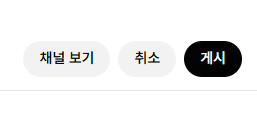
새로고침을 하면 채널 사진에 내가 만든 이미지가 생성된 것을 볼 수 있습니다. 채널 홈에서 확인하고 싶다면 오른쪽 상단의 채널 보기를 클릭합니다.
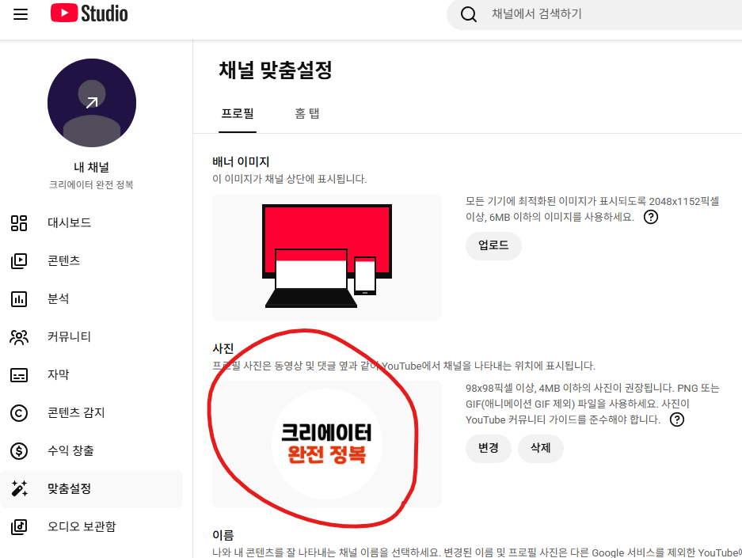
내 채널 홈 화면에서도 채널 사진이 정상적으로 등록된 것을 확인할 수 있습니다.
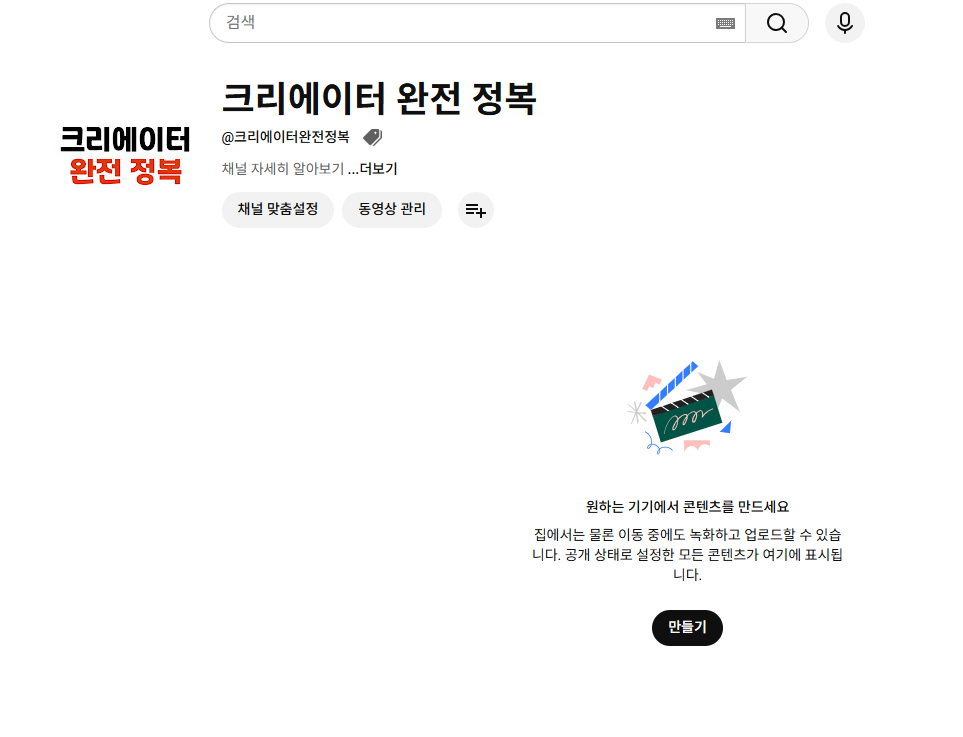
배너 이미지 만들기
유튜브 스튜디오로 돌아가기
채널 사진과 같은 방식으로 이번엔 배너 이미지를 만들어보겠습니다. 유튜브 스튜디오 → 채널 맞춤설정으로 들어가면 배너 이미지 자리가 비어있는 것을 볼 수 있습니다.
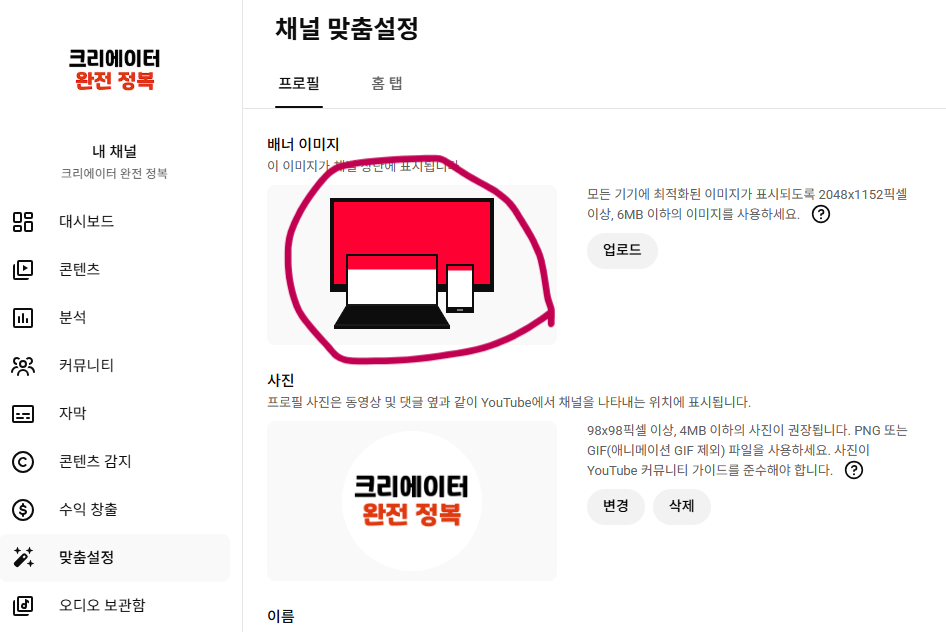
미리캔버스에서 사이즈 설정하기
다시 미리캔버스로 돌아옵니다. 배너 이미지는 채널 사진과 사이즈가 다릅니다. 상단 가운데에 현재 사이즈가 표시된 곳을 클릭한 뒤, 웹 → 유튜브 → 채널 아트 순서로 클릭합니다.
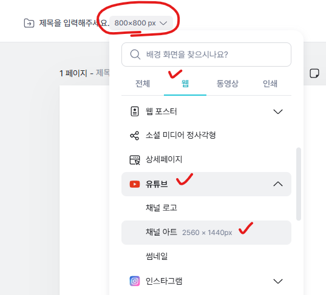
유튜브 > 채널 아트">사이즈 확인
편집 화면이 2560×1440px 사이즈로 바뀐 것을 확인할 수 있습니다. 이 사이즈가 유튜브 배너 이미지의 권장 크기입니다.
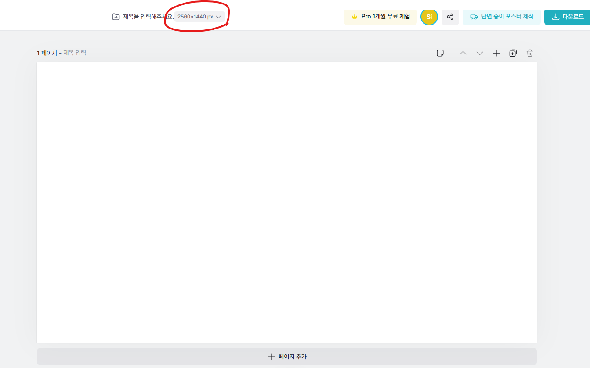
무료 템플릿 고르기
왼쪽 메뉴에 유튜브 채널 아트에 맞게 제작된 무료 템플릿들이 나옵니다. 스크롤하며 마음에 드는 것을 골라줍니다.
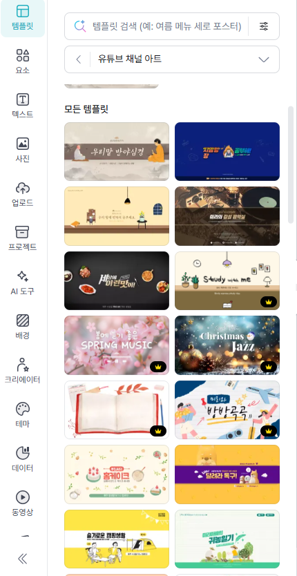
왕관(👑) 표시가 있는 템플릿은 유료입니다. 왕관 표시가 없는 것만 골라주세요.
디자인에 자신 있고 원하는 이미지가 있다면 직접 꾸며도 됩니다. 그렇지 않다면 무료 템플릿만으로도 충분히 깔끔한 배너를 만들 수 있습니다.
템플릿 수정하기
템플릿을 선택했다면 글씨나 이미지 위에 마우스를 올려보세요. 파란 테두리가 생기는 요소는 클릭해서 수정하거나 삭제할 수 있습니다. 채널 이름, 설명 문구 등을 내 것으로 바꿔줍니다.
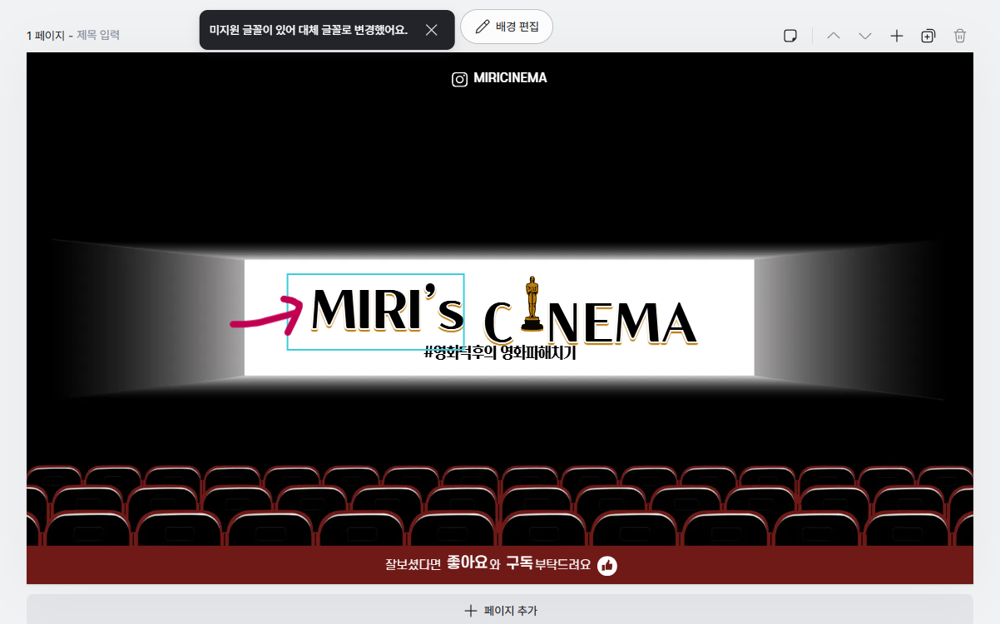
미리캔버스 무료 템플릿은 대부분 중앙에 글씨가 배치되어 있습니다. 이는 스마트폰·PC·TV 등 어떤 기기에서 봐도 글씨가 잘리지 않도록 설계된 것입니다. 글씨 크기와 위치를 템플릿 틀에서 크게 벗어나지 않게 맞춰주세요.
완성 후 다운로드
수정이 끝났다면 오른쪽 상단 다운로드 버튼을 클릭합니다.
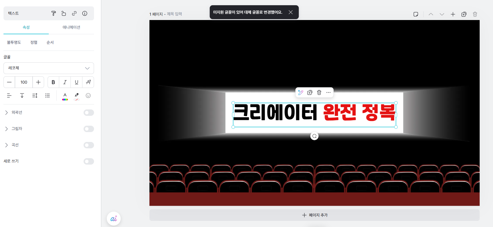
유튜브에 배너 이미지 업로드
유튜브 스튜디오 채널 맞춤설정으로 돌아와서 배너 이미지 업로드를 클릭합니다. 미리캔버스에서 다운로드한 파일을 선택해서 열어줍니다.
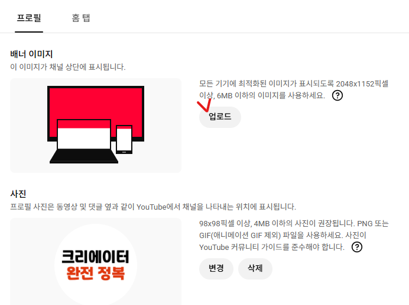
배너 미리보기 확인
이미지를 올리면 TV / 데스크톱 / 모든 기기 세 가지 기준으로 배너가 어떻게 보이는지 미리볼 수 있습니다.
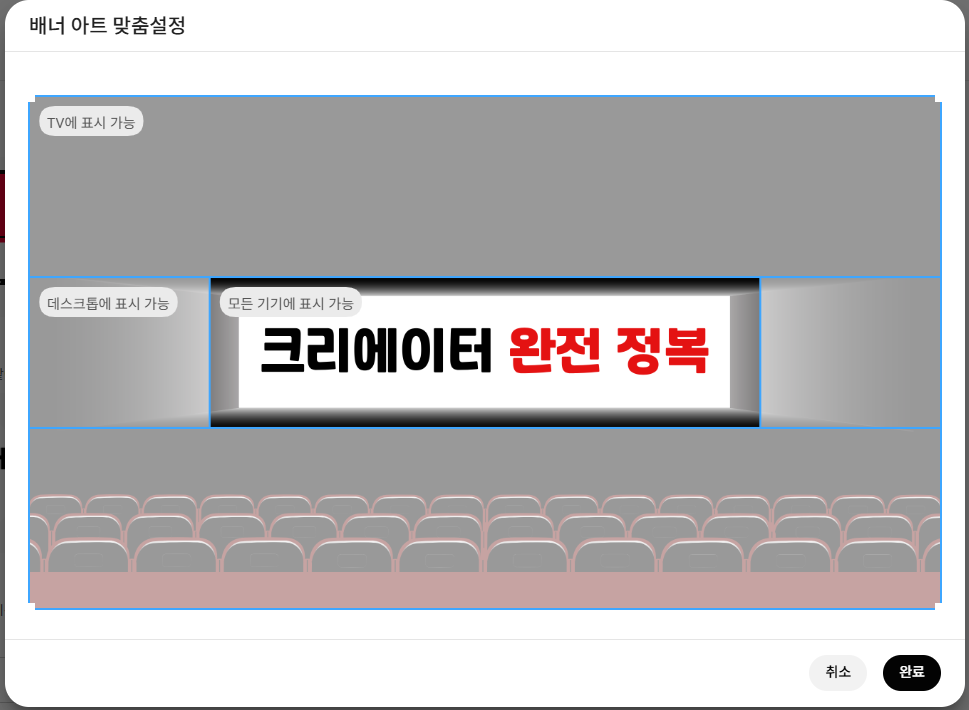
- TV에 표시 가능 — TV로 유튜브를 볼 때 보이는 범위
- 데스크톱에 표시 가능 — PC로 볼 때 보이는 범위
- 모든 기기에 표시 가능 — 스마트폰 포함 모든 기기에서 보이는 범위
앞에서 글씨를 템플릿 중앙 틀 안에 맞춰달라고 한 이유가 바로 이것입니다. 중앙에서 벗어난 글씨는 스마트폰에서 잘려 보일 수 있습니다. 글씨가 잘리거나 수정이 필요하다면 미리캔버스로 돌아가서 크기와 위치를 조정한 뒤 다시 업로드하면 됩니다.
확인이 끝났다면 완료 버튼을 클릭합니다.
게시하기
오른쪽 상단의 게시 버튼을 클릭합니다. "변경사항이 게시되었습니다." 라는 메시지가 뜨면 정상적으로 등록된 것입니다.
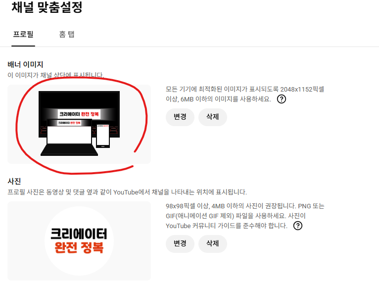
채널 보기를 눌러서 내 채널 홈에서 직접 확인해보세요.
채널 홈에서 최종 확인
채널 홈 화면에 배너 이미지와 채널 사진이 모두 채워진 것을 볼 수 있습니다.
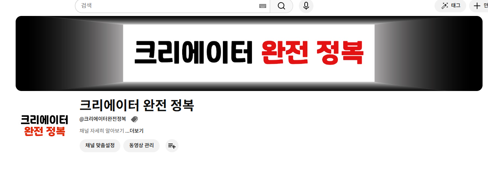